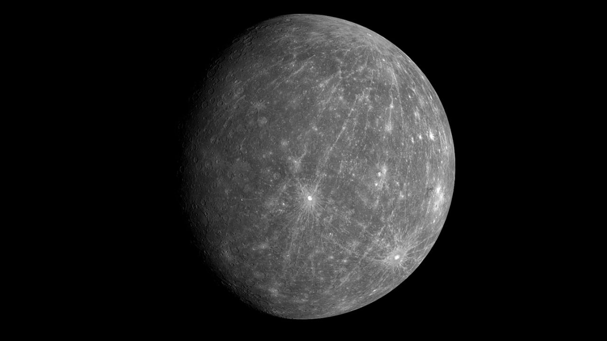
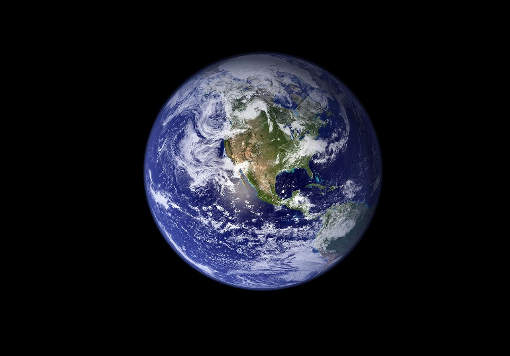
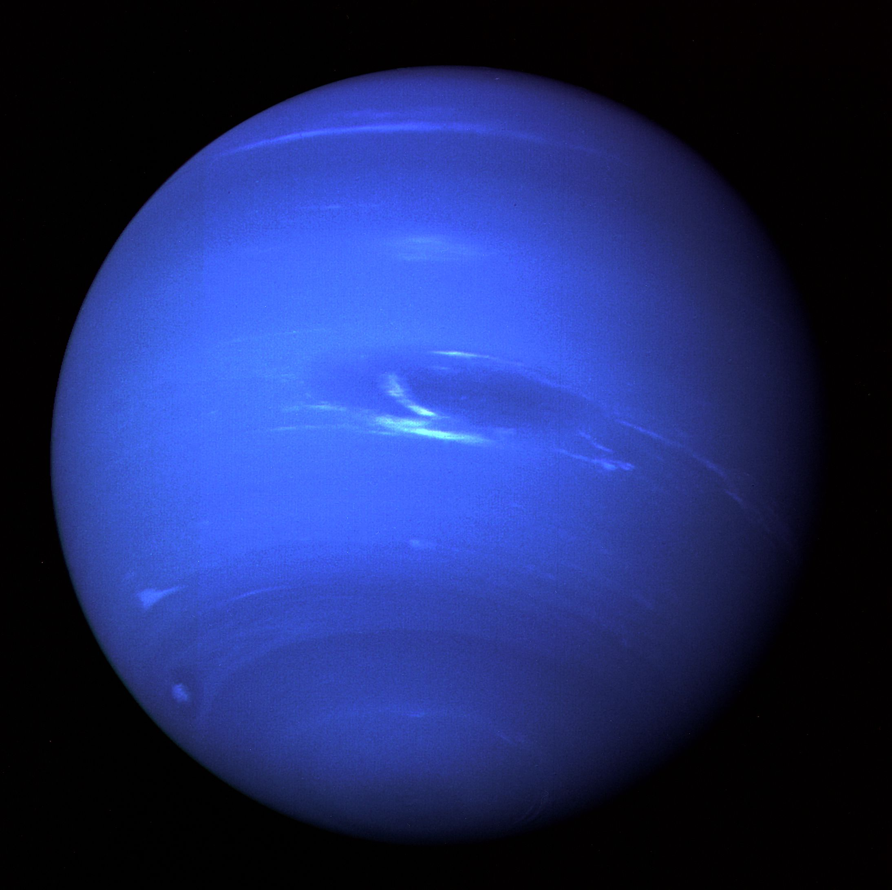

Estrelas
Uma estrela é um corpo celeste que brilha devido à fusão nuclear em seu núcleo, onde átomos de hidrogênio se combinam para formar hélio, liberando luz e calor. As estrelas variam em tamanho e cor e passam por diferentes fases ao longo de suas vidas, influenciando a formação de elementos e a estrutura do universo.
Sol

Massa: 1,989 × 10^30 kg
Distância: 149,6 milhões km
Diâmetro: 1,39 milhões km
Tipo: Espectral G2V, sequência principal
Idade: 4,6 bilhões de anos
Alpha Centauri
Massa: A - 2,2 × 10^30 kg / B - 1,8 × 10^30 kg
Distância: 4,37 anos-luz
Diâmetro: A - 1,67 milhões km / B - 1,2 milhões km
Tipo: A - G2V / B - K1V
Idade: 6 bilhões de anos
Betelgeuse
Massa: 2 × 10^31 a 4 × 10^31 kg
Distância: 642 anos-luz
Diâmetro: 1,39 bilhões km
Tipo: Supergigante Vermelha M1-M2
Idade: 8-10 milhões de anos
VY Canis Majoris
Massa: 6 × 10^31 a 8 × 10^31 kg
Distância: 3900 anos-luz
Diâmetro: 1,97 bilhões km
Tipo: Supergigante Vermelha M
Idade: 8 milhões de anos
HD 140283
Massa: 1,6 × 10^30 kg
Distância: 13000 anos-luz
Diâmetro: 1,11 milhões km
Tipo: Estrela Anã Subgigante F
Idade: 13,8 bilhões de anos
Sirius
Massa: A - 4,04 × 10^30 kg / B - 2,04 × 10^30 kg
Distância: 8,6 anos-luz
Diâmetro: A - 2,36 milhões km / B - 11200km
Tipo: A - A1V / B - Anã Branca
Idade: A - 150 a 200 milhões de anos / B - 120 milhões de anos
Planetas
Os planetas são corpos celestes que orbitam estrelas, como a Terra orbita o Sol. Eles têm uma forma esférica devido à sua própria gravidade e não produzem luz própria, mas refletem a luz da estrela ao redor. No Sistema Solar, os planetas são divididos em dois grupos principais: os planetas rochosos, como Mercúrio e Marte, e os gigantes gasosos, como Júpiter e Netuno. Cada um possui características únicas, como atmosferas, tamanhos e composições, que os tornam distintos.
Mercúrio
Massa: 3,30 × 10^23 kg
Distância: 77-222 milhões de km
Diâmetro: 4880km
Tipo: Planeta Rochoso
Idade: 4,6 bilhões de anos
Vênus
Massa: 4,87 × 10^24 kg
Distância: 38-261 milhões de km
Diâmetro: 12104km
Tipo: Planeta Rochoso
Idade: 4,6 bilhões de anos
Terra
Massa: 5,97 × 10^24 kg
Diâmetro: 12742km
Tipo: Planeta Rochoso
Idade: 4,6 bilhões de anos
Marte

Massa: 6,42 × 10^23 kg
Distância: 56-401 milhões de km
Diâmetro: 6779km
Tipo: Supergigante Vermelha M
Idade: 4,6 bilhões de anos
Júpiter

Massa: 1,90 × 10^27 kg
Distância: 588-968 milhões de km
Diâmetro: 139820km
Tipo: Planeta Gasoso (ou Gigante Gasoso)
Idade: 4,6 bilhões de anos
Saturno
Massa: 5,68 × 10^26 kg
Distância: 1,2-1,7 bilhões de km
Diâmetro: 116460km
Tipo: Planeta Gasoso (ou Gigante Gasoso)
Idade: 4,6 bilhões de anos
Urano

Massa: 8,68 × 10^25 kg
Distância: 2,6-3 bilhões de km
Diâmetro: 50724km
Tipo: Planeta Gasoso (ou Gigante Gasoso)
Idade: 4,6 bilhões de anos
Netuno
Massa: 1,02 × 10^26 kg
Distância: 4,3-4,7 bilhões de km
Diâmetro: 49244km
Tipo: Planeta Gasoso (ou Gigante Gasoso)
Idade: 4,6 bilhões de anos
Buracos Negros
Os buracos negros são regiões do espaço onde a gravidade é tão intensa que nada pode escapar, nem mesmo a luz. Eles se formam a partir do colapso de estrelas massivas ao final de suas vidas ou através da fusão de buracos negros menores. A borda de um buraco negro é conhecida como horizonte de eventos, e é o ponto além do qual a gravidade é tão forte que nada pode voltar. Apesar de não poderem ser observados diretamente, sua presença pode ser inferida através de seus efeitos sobre a matéria ao seu redor e a radiação que emitem.
Sagittarius A
Localização: Centro da Via Láctea
Massa: 4 milhões de vezes a massa do Sol
Características: É o buraco negro supermassivo mais próximo da Terra e está localizado no centro da nossa galáxia. Observações detalhadas de estrelas em órbita ao redor de Sagittarius A* ajudaram a confirmar sua existência.
Messier 87

Localização: Galáxia M87, uma galáxia elíptica gigante
Massa: 6,5 bilhões de vezes a massa do Sol
Características: Este buraco negro supermassivo foi o primeiro a ser fotografado pelo Event Horizon Telescope (EHT) em 2019. A imagem capturada é uma das mais famosas e é um marco na astrofísica.
Ton 618
Localização: Galáxia distante, cerca de 10 bilhões de anos-luz da Terra
Massa: 66 bilhões de vezes a massa do Sol
Características: Considerado um dos maiores buracos negros conhecidos em termos de massa. É um exemplo extremo de buraco negro supermassivo e está entre os maiores já observados.
V4641 Sagittarii
Localização: Constelação de Sagitário
Massa: 9-11 vezes a massa do Sol
Características: Este buraco negro é um dos buracos negros estelares mais massivos conhecidos. É interessante por estar na faixa superior do espectro de massas para buracos negros estelares.
Cygnus X-1

Localização: Constelação de Cygni
Massa: 15 vezes a massa do Sol
Características: Cygnus X-1 é um dos primeiros buracos negros estelares identificados e estudados. Ele é conhecido por sua associação com um sistema binário de raios-X, o que ajudou a confirmar sua natureza como um buraco negro.
GRS 1915+105
Localização: Constelação de Áries
Massa: 12-18 vezes a massa do Sol
Características: Conhecido por exibir um comportamento muito energético e por ter uma taxa de crescimento muito rápida. É um exemplo de um buraco negro estelar com atividade de alta energia.